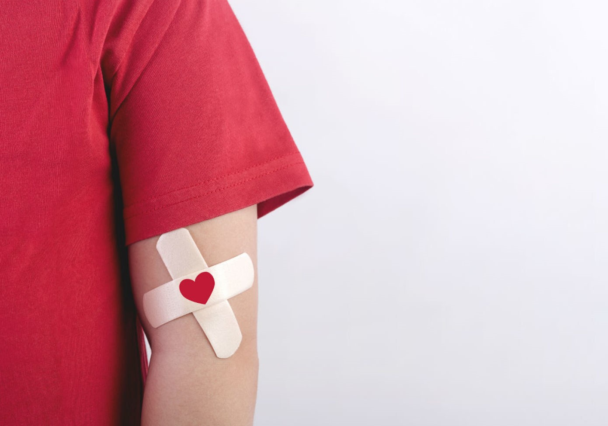

1
Aout
Qui peut donner son sang ?
Toutes les personnes âgées de 18 à 70 ans peuvent donner leur sang. Il suffit d'être en bonne santé et de ne pas avoir été dans une situation considérée comme à risques (voyages dans certains pays étrangers, rapports sexuels non protégés...) dans les mois précédant le don. Les soins dentaires et la prise de certains médicaments peuvent entraîner une contre-indication temporaire au don de sang.